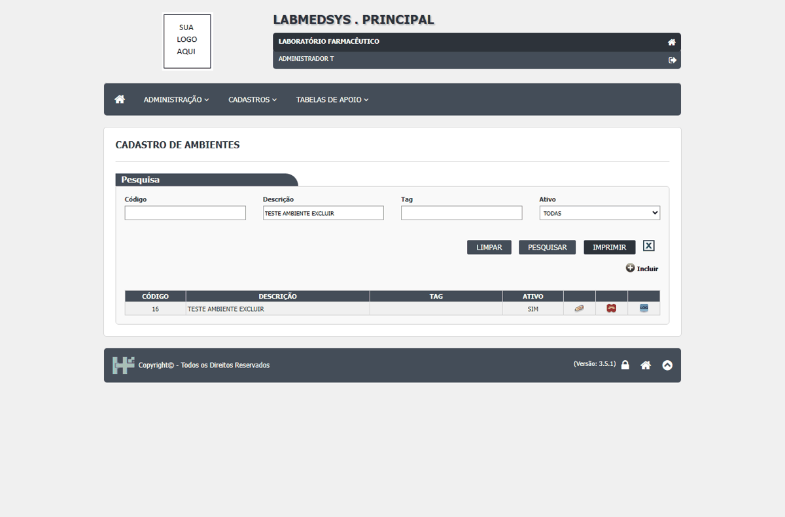
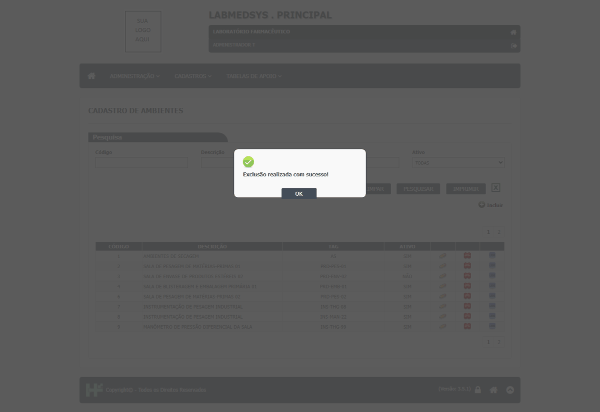
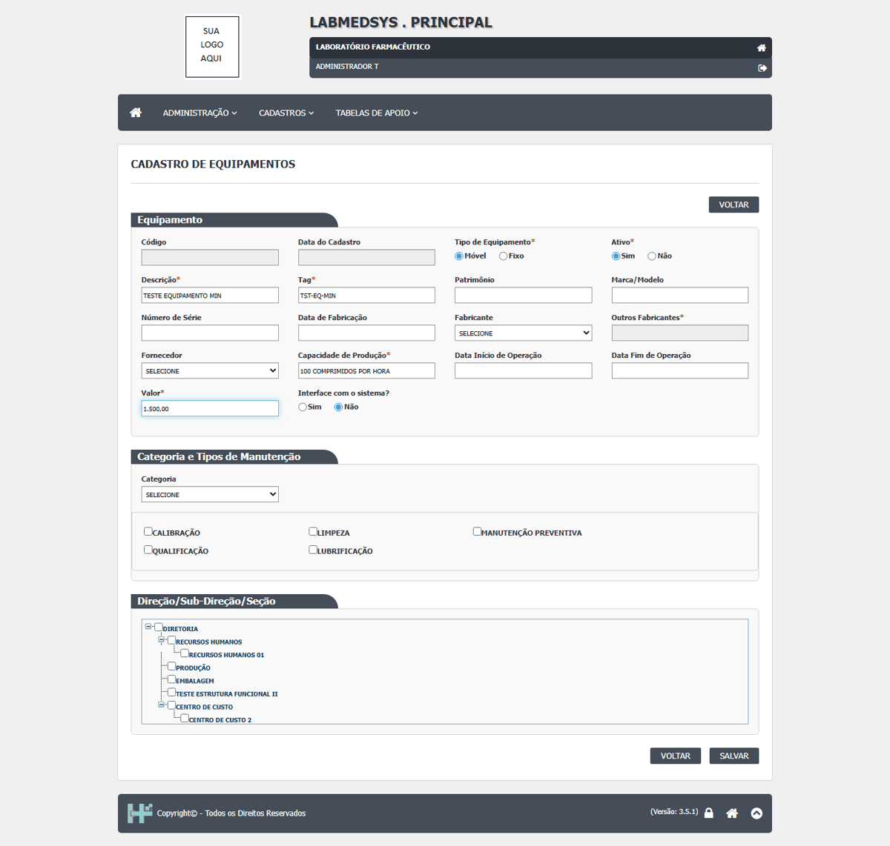
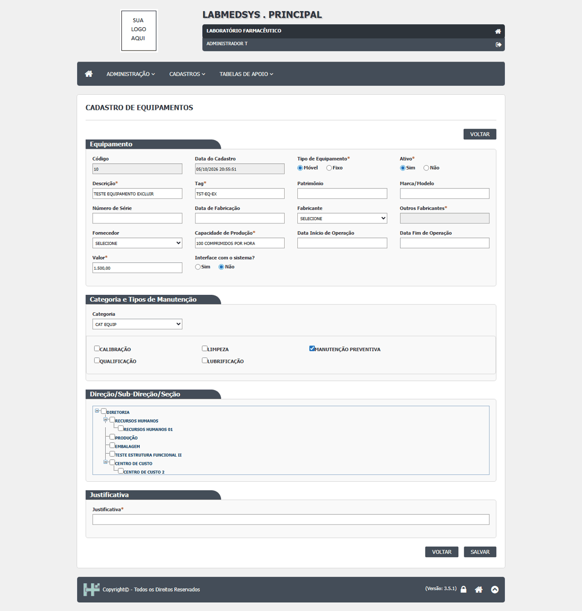

DV-PRI-009 · Exclusão de Ambiente e de Equipamento é gravada sem pedir justificativa
Ao excluir um ambiente ou um equipamento, o sistema pede só a confirmação **"Confirma a exclusão do item?"** e mostra **"Exclusão realizada com sucesso!"**. Não há campo de justificativa. O registro vai para a lixeira, mas o motivo da exclusão não fica registrado. Nas outras telas do mesmo módulo a justificativa é exigida: na alteração de Ambiente e Equipamento e na exclusão de Profissional. A área decidiu que toda exclusão e alteração de cadastro deve exigir justificativa (RN-PRI-070).
Como reproduzir o erro, passo a passo
- Entrar no módulo Principal e abrir Cadastros › Cadastro de Ambientes.
- Em Descrição, digitar TESTE AMBIENTE EXCLUIR e clicar em PESQUISAR.
- Clicar no ícone vermelho de excluir da linha.
- Na janela "Confirma a exclusão do item?", clicar em SIM.
- Repetir em Cadastros › Cadastro de Equipamentos com um equipamento TESTE sem itens vinculados.
Esperado
Antes de excluir, pedir a justificativa (obrigatória, com a mensagem "A justificativa da exclusão é obrigatória!" se vazia), como já faz a exclusão de Profissional, e gravá-la no histórico junto com usuário, data e hora.
Obtido
Só "Confirma a exclusão do item?" e "Exclusão realizada com sucesso!". Nenhum campo de justificativa; o histórico do registro não guarda motivo.
Evidência (captura da tela)



DV-PRI-010 · Salvar um equipamento sem Categoria dá erro de servidor e a tela fica parada, sem mensagem
O campo **Categoria** não aparece como obrigatório (não tem asterisco nem validação). Se o usuário preenche todos os campos obrigatórios e deixa a Categoria em **SELECIONE**, ao salvar o servidor devolve o erro **"Input string was not in a correct format"** e a tela fica parada, sem nenhuma mensagem para o usuário. O equipamento não é gravado. Com uma Categoria escolhida (e mesmo sem fabricante e fornecedor), grava normalmente.
Como reproduzir o erro, passo a passo
- Entrar no módulo Principal e abrir Cadastros › Cadastro de Equipamentos; clicar em Incluir.
- Preencher só os obrigatórios: Tipo de Equipamento Móvel, Ativo Sim, Descrição TESTE EQUIPAMENTO MIN, Tag TST-EQ-MIN, Capacidade de Produção 100 COMPRIMIDOS POR HORA, Valor 1.500,00.
- Deixar Categoria em SELECIONE (e Fabricante e Fornecedor em SELECIONE).
- Clicar em SALVAR e confirmar.
Esperado
Ou o equipamento é gravado sem categoria, ou a tela recusa com uma mensagem clara (por exemplo, "A Categoria é obrigatória!") e o campo marcado como obrigatório.
Obtido
Erro de servidor "Input string was not in a correct format"; a tela fica parada, sem mensagem, e o equipamento não é gravado.
Evidência (captura da tela)

DV-PRI-012 · Equipamento recém-criado não podia ser excluído (aberto por engano; explicado pela regra do item vinculado na própria tela)
Um equipamento recém-criado, sem uso conhecido, recebeu na exclusão a frase "Exclusão inválida, existem referências com outras tabelas." e não pôde ser excluído. No reteste da rodada 2 viu-se o motivo: o equipamento tinha o tipo de manutenção **"Manutenção preventiva"** marcado na própria tela (vem marcado a partir da categoria). Removido o item vinculado, com justificativa, a exclusão funcionou ("Exclusão realizada com sucesso!"). O comportamento é a regra RN-PRI-071 (item vinculado na própria tela impede a exclusão até ser removido). **Este registro foi encerrado: não é defeito do sistema.** O que sobra é a recusa com mensagem genérica, que não diz qual item impede, tratado no DV-PRI-011.
Como reproduzir o erro, passo a passo
- Em Cadastros › Cadastro de Equipamentos, incluir um equipamento com Categoria e tentar excluí-lo pela lista: aparece a recusa genérica.
- Abrir o equipamento e conferir os itens vinculados na própria tela (tipos de manutenção).
- Remover o item vinculado com justificativa e repetir a exclusão.
Esperado
Exclusão liberada depois de removido o item vinculado, com a mensagem dizendo qual item impede (esta parte está no DV-PRI-011).
Obtido
A exclusão funcionou depois de remover o tipo de manutenção; a mensagem de recusa continua genérica.
Evidência (captura da tela)

DV-PRI-008 · Pesquisa por nome não ignora acentos nos cadastros de Ambiente, Equipamento e Pessoa jurídica
A pesquisa encontra por parte do nome e não se importa com maiúsculas e minúsculas, mas **não acha o registro quando o texto é digitado sem acento**: "laboratorio" não encontra "LABORATÓRIO", "pressao" não encontra "PRESSÃO" e "farmaceutica" não encontra "FARMACÊUTICA". Quem digita sem acento conclui que o registro não existe e pode cadastrá-lo de novo.
Como reproduzir o erro, passo a passo
- Entrar no módulo Principal e abrir Cadastros › Cadastro de Ambientes.
- Em Descrição, digitar laboratorio (sem acento), deixar Ativo em TODAS e clicar em PESQUISAR.
- Repetir com laboratório (com acento) para comparar.
- Fazer o mesmo em Cadastro de Equipamentos com pressao e em Pessoa Jurídica (campo Nome/Razão Social) com farmaceutica.
Esperado
Encontrar o registro com ou sem acento, como já acontece com maiúsculas e minúsculas (CT-PRI-096).
Obtido
"A pesquisa não retornou nenhum resultado." com o texto sem acento; com acento, encontra.
Evidência (captura da tela)